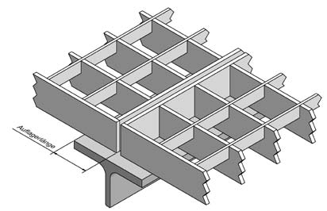

Die großflächige Verlegung von Rosten muss nach einem vorher aufgestellten Verlegeplan erfolgen. Unternehmer, die in ihren Betrieben keinen Sachkundigen für die Verlegung von Rosten haben, sollten den Verlegeplan vom Hersteller oder Lieferanten der Roste anfertigen lassen. Aus dem Verlegeplan muss die Tragstabrichtung ersichtlich sein. Quadratische Einzelroste sind zu vermeiden, um das Verwechseln der Tragstabrichtung beim Verlegen auszuschalten. Abweichungen sind zulässig, wenn die quadratischen Einzelroste allseitig unterstützt sind oder durch technische Maßnahmen ein falsches Verlegen ausgeschlossen ist.
Roste dürfen nicht über die äußere Auflage hinausragend verlegt werden. Abweichungen sind zulässig, wenn
Die der Planung zugrundeliegende Auflagerlänge für Roste muss mindestens 30 mm betragen (Abb. 12). Im Betriebszustand darf die Auflagerlänge das Maß von 25 mm nicht unterschreiten. Abweichungen sind zulässig, wenn durch konstruktive Maßnahmen ein Verschieben der Roste in Tragrichtung zwangsläufig verhindert ist.
Das Verlegespiel, a, zu benachbarten Rosten sollte 4 mm betragen (Abb. 13). Lässt sich aufgrund von Randeinfassungen oder Verschiebesicherungen ein größeres Verlegespiel nicht vermeiden, muss sichergestellt sein, dass auch im Betriebszustand a < 20 mm ist.

Abb. 12 Rostauflager
Werden Roste als Bodenbeläge von Arbeitsbühnen oder Laufstegen verwendet, dürfen diese höchstens solche Öffnungen aufweisen, dass eine Kugel mit einem Durchmesser von 35 mm nicht hindurch fällt.
Bodenbeläge mit darunter liegenden Arbeitsflächen, die nicht nur gelegentlich aufgesucht werden, dürfen höchstens solche Öffnungen aufweisen, dass eine Kugel mit einem Durchmesser von 20 mm nicht hindurch fällt, sofern nicht durch andere Maßnahmen ein gleichwertiger Schutz sichergestellt wird.
In Fällen, in denen die Gefährdungsbeurteilung ergibt, dass die Gefährdungen durch Gegenstände oder andere Materialien, die durch den Bodenbelag fallen können, signifikant größer sind als Ausrutschen, Stürzen usw., darf der Bodenbelag keine Öffnungen aufweisen.
Zum Schutz vor herabfallenden Gegenständen zwischen den Rändern oder Ausschnittsrändern von Rosten und angrenzenden Bauteilen oder den durch die Ausschnitte verlaufenden Bauteilen, z. B. Rohre, Behälter oder Stützen, ist eine Fußleiste dann erforderlich, wenn der Abstand zwischen Metallrost und Bauteil mehr als 30 mm beträgt.